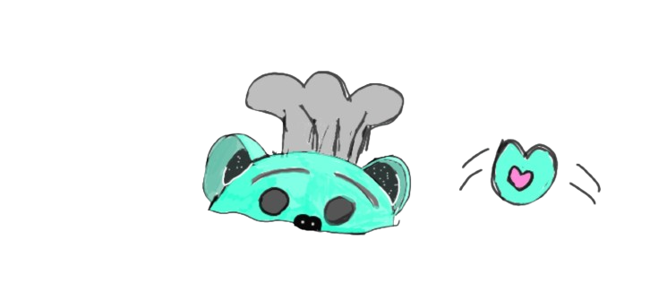

Receta de cupcake de brocoli
Ingredientes
| Ingrediente | Cantidad |
|---|---|
| Brócoli entero | 1 |
| Huevos | 2 |
| Puré de patatas | 450 gramos |
| Mantequilla | 50 gramos |
| Harina de trigo | 150 gramos |
| Levadura química tipo Royal | 1 sobre |
| Sal | 5 gramos |
| Curry | ½ cucharadita |
| Pimentón dulce | ½ cucharadita |
| Cebolla en polvo | ½ cucharadita |
| Ajo en polvo | ½ cucharadita |
| Mezcla de quesos para fundir | 100 gramos |
Procedimiento
- Empezamos por alistar todos los ingredientes en la mesa de cocina. Separa la yema de las claras, derrite ligeramente la mantequilla, tamiza todos los ingredientes secos en conjunto, parte el brócoli en ramilletes y el puré de patatas debe estar a temperatura ambiente, ser cremoso, ligero y mejor casero.
- Para cocinar el brócoli, calienta una olla con abundante agua y espera que hierva. En ese momento, añadir los arbolitos de brócoli y escaldar durante un minuto más o menos. Inmediatamente después pasa por un colador y pon los ramilletes sobre el chorro de agua fría para cortar la cocción. Reserva sobre papel absorbente para eliminar el exceso de agua.
- Es muy importante que el brócoli quede al dente y que no te pases de con el tiempo de cocción, con un minuto o un y medio será más que suficiente, de lo contrario no solo agarrará un color feo sino que perderá muchas de sus propiedades.
- Por otro lado, batimos las claras y las yemas de huevo por separado. Ambas preparaciones deben duplicar su volumen, así que bate con fuerza incorporando aire para que suban.
- A continuación empezamos por mezclar las yemas con el puré de patata y la mantequilla, que recuerda debe estar derretida. Una vez se integren estos ingredientes, vamos añadiendo poco a poco los ingredientes secos que hemos tamizado previamente.
- Ya para terminar con la masa de nuestros muffins salados, incorpora las claras montadas a la mezcla anterior y remueve suavemente, con movimientos envolventes para evitar que se bajen o que pierdan demasiado aire.
- Estos lo que le dará a nuestros muffins de brócoli un toque suave y esponjoso.
- Los muffins de brócoli los puedes hacer directo en la bandeja especial para muffins, normal o de silicona, o utilizando cestillos de papel. Si decides hacerlos directo en la bandeja recuerda engrasar cada agujero previamente.
- Entonces, rellena una manga pastelera con la mezcla coloca una primera capa en la base. Seguidamente, coloca un ramillete de brócoli en el centro y termina de rellenar con la mezcla hasta cubrirlo.
- Esparce encima de cada muffin un poco de la mezcla de queso y cocina en el horno precalentado durante 20 minutos a 180ºC.
- Pasados los primeros 15 minutos podrás ir revisando para comprobar que no se doran demasiado.